地政学
ベオグラードはドナウとサヴァの合流点に立ち、中央ヨーロッパ、バルカン、黒海方面を結びます。首都機能、国境の記憶、旧ユーゴスラビアの経験、EU接近と非同盟的な外交感覚が、街路と官庁街に重なります。濃く残ります。
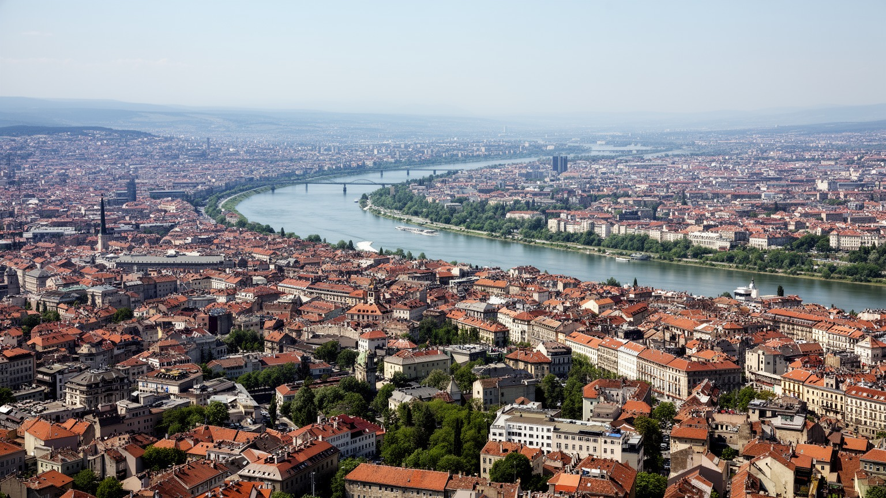
🇷🇸 セルビア / ヨーロッパ / World City Atlas
ドナウ川とサヴァ川の合流点に立つセルビアの首都です。要塞、官庁、正教会、社会主義期の大通り、ニュー・ベオグラードの業務地区、夜の河岸が重なります。
都市の骨格
ベオグラードは国境の近さ、川の交通、帝国の境界、社会主義期の計画都市、現代の再開発を同時に持つ都市です。古い要塞と新しい業務地区の距離が、街の緊張を見せます。
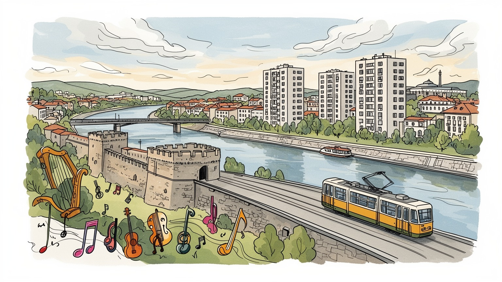
ベオグラードはドナウとサヴァの合流点に立ち、中央ヨーロッパ、バルカン、黒海方面を結びます。首都機能、国境の記憶、旧ユーゴスラビアの経験、EU接近と非同盟的な外交感覚が、街路と官庁街に重なります。濃く残ります。
行政、金融、IT、物流、建設、大学、医療、メディアが雇用を支えます。ニュー・ベオグラードの業務地区と市場、配送、公共交通、カフェ労働が近く、若い専門職と生活を支える現場労働が同じ都市を動かします。続きます。
セルビア正教会、カトリック、イスラム、ユダヤの記憶が川沿いと旧市街に残ります。音楽、映画、演劇、カフェ、サッカー、家族行事は政治の緊張を和らげ、同時に歴史の傷を語り直す文化の器になります。深く響きます。
観光客はカレメグダン、スカダルリヤ、聖サワ大聖堂、河岸の夜を歩く一方、住民には家賃、賃金、渋滞、大気汚染、再開発、若者流出が現実です。魅力と不安が近い首都として読む必要があります。生活の声も重要です。
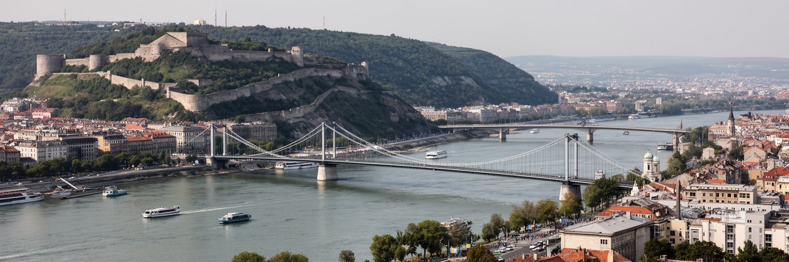
ベオグラードの形を決めているのは、サヴァ川とドナウ川が出会う合流点です。カレメグダン要塞の台地から水面を見下ろすと、都市がなぜここに置かれ、なぜ何度も争われたのかが分かります。川は防御線であり、交易路であり、境界であり、遊歩道でもあります。旧市街は高い土地に行政、商業、教会、劇場を集め、低地と河岸には港、倉庫、鉄道、工場、後の再開発地が置かれてきました。橋は単なる交通施設ではなく、セルビア本土側とニュー・ベオグラード、ゼムン、空港方面を結ぶ生活の関節です。霧の冬、暑い夏、増水する川、風の強い河岸は、都市の気候と日常を作ります。観光客が見る夕景の裏側で、通勤、物流、下水、洪水対策、河岸の不動産開発が動きます。ベオグラードを読むには、要塞を古い名所として眺めるだけでなく、川が軍事、商業、住宅、娯楽をどう配置してきたかを見る必要があります。川辺のクラブや散歩道も、歴史の境界線を使い直す都市文化です。さらに合流点は、都市の心理的な中心でもあります。水辺へ出ることは過去の戦場、現在の週末、将来の開発計画を同時に見る行為になります。対岸の見え方や橋の混雑は、地区ごとの距離感を住民に意識させます。川は眺める対象である前に、都市の時間と記憶を分ける線でもあります。水面に向かう視線の向きが、街の政治と生活を結び続けています。
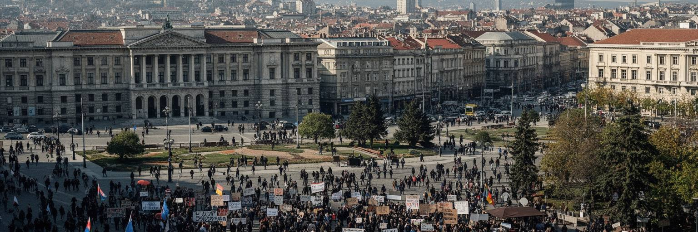
ベオグラードはセルビアの行政首都であり、国会、政府機関、中央銀行、大使館、主要メディア、大学、裁判所が集まります。ここでは政治が建物の中だけで完結しません。広場、橋、大通り、新聞社、大学前、教会前は、選挙、抗議、追悼、国家式典、外交上の緊張が表に出る場所です。旧ユーゴスラビアの首都だった経験も重く、連邦国家の崩壊、戦争、制裁、NATO空爆、民主化運動、コソボをめぐる対立は、現在の外交姿勢と市民感覚に影を落としています。一方で、EUとの制度接近、ロシアや中国との関係、周辺諸国との移動、移民や難民の通過は、首都の日常的な議題です。政治都市としてのベオグラードは、硬い官庁街だけでなく、カフェでの議論、独立メディア、学生運動、サッカーサポーター、教会の影響力を含んでいます。国家を支える制度と、その制度に異議を唱える街頭が近いことが、この都市の緊張を作ります。首都を見る時は、建物の威厳よりも、誰が広場を使い、どの記憶が公的に語られ、どの痛みが沈黙しているかに注意する必要があります。地方から来る人にとっても、ベオグラードは申請、大学、病院、仕事、抗議のために向かう場所です。中心に集まりすぎる機能は便利さであると同時に、国内格差の象徴にもなります。ベオグラードの政治は、国境の外の問題を毎日の街路へ引き寄せます。
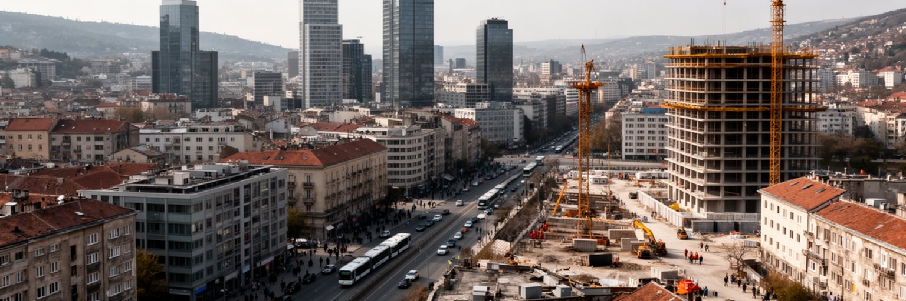
ベオグラード経済はセルビアの中で突出した重みを持ち、行政、金融、通信、IT、建設、物流、教育、医療、メディアが集中します。ニュー・ベオグラードには大きなオフィス、銀行、外資系企業、会議施設、商業施設が並び、空港や高速道路に近い立地が地域経済を引き寄せています。しかし都市を動かすのは白いオフィスだけではありません。市場の販売員、路面電車とバスの運転手、配送、清掃、警備、病院勤務、飲食店、建設現場、修理工、倉庫労働が毎日の基盤です。若い技術者や英語で働く専門職にとっては、ベオグラードは国外へ出る前の足場にも、国内で国際的な仕事を得る場所にもなります。一方で、賃金と家賃の差、非正規化、頭脳流出、地方との格差は深刻です。首都が成長するほど、地方から人材と資本を吸い寄せ、国内の不均衡を強める面もあります。ベオグラードを産業都市として読むには、GDPの大きさだけでなく、誰が都市の便利さを支え、誰が上昇する住宅費に押され、誰が国外へ働きに出るのかを見る必要があります。新しいIT企業と古い市場、河岸の再開発と郊外の通勤が同時にあることが、現在の労働地図です。加えて、周辺国との道路輸送、ドナウ水運、空港貨物は、内陸国セルビアの外部接続を支えます。事務職と現場職の距離が近いほど、交通と住宅の政策は産業政策そのものになります。経済の近代化は生活条件の改善と結びついて初めて、都市全体の力になります。
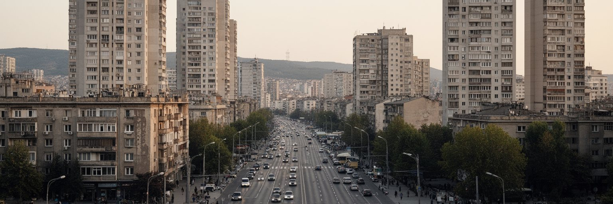
ニュー・ベオグラードは、サヴァ川の西側に広がる計画都市として、社会主義ユーゴスラビアの近代化を象徴しました。広い大通り、ブロック番号で呼ばれる住宅地、公共施設、大規模集合住宅、連邦政府の建物は、旧市街の曲がった街路とは違う都市の思想を示しています。住民にとっては、ここは記念碑的な風景である前に、学校、スーパー、バス停、公園、団地の中庭が続く生活の場所です。社会主義期の住宅は老朽化しつつも、広い緑地と公共空間を持ち、都市の混雑を受け止めています。近年はオフィス、ショッピングモール、ホテル、会議施設が増え、セルビア経済の現代的な顔にもなりました。この変化は便利さと雇用を生む一方、車依存、商業化、家賃上昇、古い団地の維持費という課題を伴います。ニュー・ベオグラードを見る時は、冷たい社会主義建築という一言で片づけず、国家の近代化計画が家族の生活へどう変わり、さらに市場経済の中でどう使い直されているかを見る必要があります。大きな空地と直線道路は、集会、通勤、買い物、子どもの遊び、再開発を受け入れる余白でもあります。団地のベンチ、学校への歩道、商店、駐車場の使われ方を見ると、計画図には出ない生活の調整が見えます。古い公共空間を残しながら更新できるかが、この地区の将来を左右します。過去の都市計画が現在の不動産と日常生活に重なる場所として、この地区はベオグラードの重要な読みどころです。
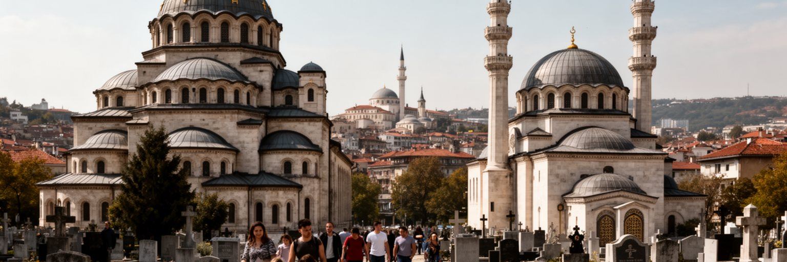
ベオグラードの信仰は、セルビア正教会の大きな存在感を中心にしながら、カトリック、イスラム、ユダヤの記憶も含みます。聖サワ大聖堂は国家的な象徴として強く見えますが、宗教生活は巨大な聖堂だけでなく、地区の教会、墓地、聖人の日、家族の祝い、葬儀、復活祭、クリスマス、洗礼、婚礼に根を持っています。オスマン帝国、ハプスブルク、ユダヤ人コミュニティ、旧ユーゴスラビアの多民族社会の記憶は、建物の数だけでは測れません。戦争と移動によって失われた共同体も多く、宗教は慰めであると同時に、民族と政治の境界を強める力にもなり得ます。だからベオグラードの信仰を読むには、聖堂の美しさだけでなく、誰の祈りが公共空間で見えやすく、誰の記憶が小さな標識や墓地に残るのかを見る必要があります。家族行事としての宗教は、都市の忙しさの中で親族と近所を結び直します。移民、留学生、周辺国から来た人々も、それぞれの礼拝や食の習慣を持ち込みます。宗教施設は観光名所ではなく、喪失と希望、帰属と排除が交差する都市の場所です。教会の鐘、墓参り、市場で買う祝いの食材、親族の集まりは、政治的な標語より静かに帰属を示します。その静けさも都市の公共文化です。信仰の層を丁寧に見ると、ベオグラードが単一の首都ではなく、多くの記憶を抱えた共同体であることが分かります。
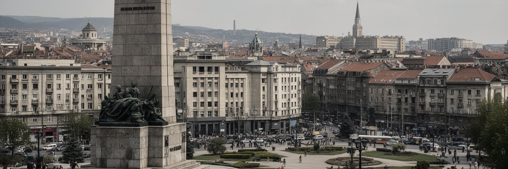
ベオグラードはセルビアの首都であると同時に、かつてユーゴスラビア連邦の首都でした。この記憶は、政治的な懐古だけでなく、建築、音楽、映画、スポーツ、家族の移動、混合婚、軍隊経験、大学生活、旧友の住所に残っています。チトーの記憶をめぐる場所、社会主義期の記念碑、連邦機関の建物、ニュー・ベオグラードの計画住宅は、国家が異なる未来を信じていた時代を語ります。しかし連邦の崩壊は、戦争、制裁、難民、孤立、記憶の対立を生みました。ベオグラードには、旧ユーゴ圏の各地から来た人々、避難した家族、失われた故郷を持つ住民が暮らしています。そのため都市の会話には、懐かしさ、怒り、沈黙、冗談が同居します。旧ユーゴの記憶を読むことは、過去を一つの物語へ整理することではありません。誰が何を失い、何を誇り、何を語りたがらないかを見つめることです。博物館や記念碑だけでなく、音楽フェス、サッカー、古い団地、バス路線、家庭料理にも連邦時代の痕跡があります。世代によって記憶の距離も違います。年長者には失われた生活圏であり、若者には親から聞く物語であり、政治家には利用しやすい象徴にもなります。ベオグラードの文化的な厚みは、この矛盾した記憶を抱えたまま、周辺都市と再び人の行き来を作っている点にあります。記憶の扱い方は、周辺国との和解や若い世代の自己理解にも関わります。
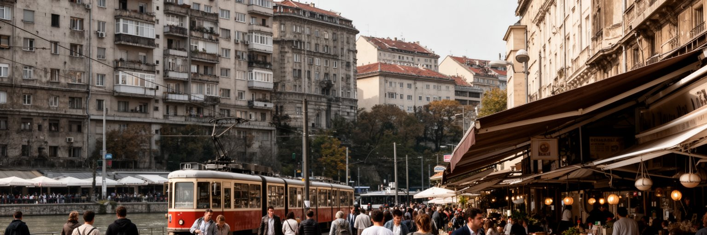
ベオグラードの日常は、カフェ、キオスク、市場、バス停、団地の中庭、川沿いの散歩、家族の食卓で作られます。観光客には夜のにぎわいや旧市街の雰囲気が目立ちますが、住民には家賃、暖房費、賃金、通勤、駐車、学校、病院、行政手続きが切実です。中心部の住宅は改修や短期滞在需要で高くなり、若い世帯は郊外やニュー・ベオグラード、周辺自治体へ広がります。古い集合住宅は立地と近所づきあいの強みを持つ一方、断熱、エレベーター、配管、共有部分の維持が問題になります。市場での買い物やカフェでの長い会話は、所得が高くない都市で人が社会関係を保つ方法でもあります。大気汚染、冬の暖房、渋滞、公共交通の混雑は、生活の質を左右します。ベオグラードを暮らしから読むには、歴史的な建物や新しいタワーだけでなく、住民がどのくらいの時間と費用で仕事、学校、病院、家族に届くのかを見る必要があります。都市の魅力は社交性にありますが、その社交性は住み続けられる家賃と公共空間があって初めて維持されます。親と同居する若者、年金で暮らす高齢者、地方から来た学生、外国企業で働く専門職では、同じ物価上昇の意味が違います。若者が国外へ向かう時、都市は活気を失うだけでなく、家族の介護や地域の未来も揺らぎます。日常の小さな場所を守ることが、首都の持続性を支えます。
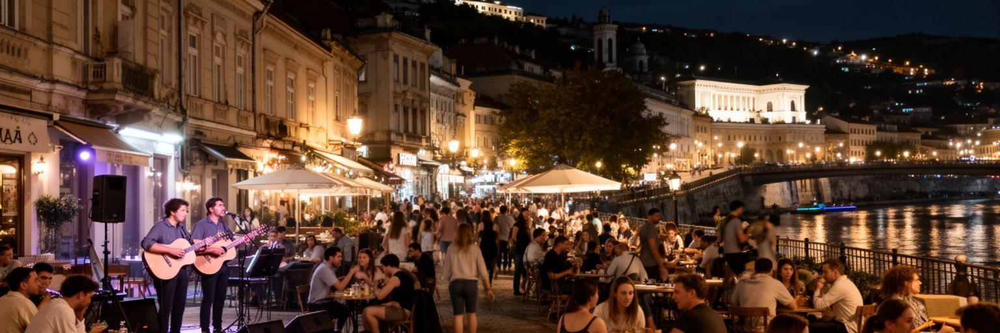
ベオグラードの文化は、重い歴史と軽やかな社交が近くにあります。スカダルリヤの石畳、劇場、映画館、書店、ギャラリー、ジャズ、ロック、民俗音楽、クラブ、カフェは、政治的な緊張を抱える都市に逃げ場と議論の場所を与えてきました。河岸のナイトライフは観光の看板にもなっていますが、そこには音響、警備、清掃、タクシー、飲食、若者の雇用、近隣住民の騒音問題が重なります。セルビアの音楽や映画は、旧ユーゴスラビアの記憶、戦争の傷、家族の移動、ユーモア、都市の反抗心を表現してきました。カフェで長く話す習慣は、単なる余暇ではなく、情報交換、仕事探し、政治議論、恋愛、友人関係を作る社会的なインフラです。文化都市としてのベオグラードを読むには、華やかな夜だけでなく、劇場の予算、若い作家の働き方、家賃で消える小さな会場、検閲や圧力に向き合うメディアを見る必要があります。文化は街の傷を隠す飾りではなく、語りにくい過去を扱う方法です。観光客が音楽を楽しむ時、その背景には表現の自由、世代間の記憶、経済的な不安が流れています。フェスティバルや小劇場は、国際的な交流の入口であると同時に、若い表現者が都市に残る理由にもなります。夜の明るさは、都市がまだ会話をあきらめていないことを示します。同時に、文化の場所を住民が使い続けられるかが、街の厚みを決めます。
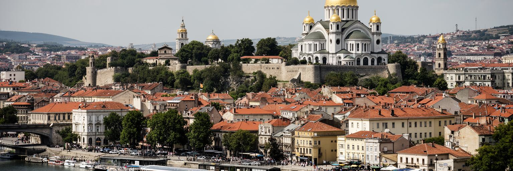
ベオグラード観光は、カレメグダン要塞、クネズ・ミハイロヴァ通り、スカダルリヤ、聖サワ大聖堂、ゼムン、博物館、河岸の夜景をつなぎます。短い滞在でも歩きやすく、食事、音楽、歴史、川の景色を組み合わせやすい都市です。しかし名所の背後には、帝国の境界、戦争、移住、宗教、社会主義、再開発の層があります。要塞は美しい公園であると同時に、オスマンとハプスブルクの境界を示す軍事施設でした。ゼムンは別の歴史圏を持ち、旧市街とは違う中欧的な表情を残します。聖サワ大聖堂は信仰と国家の象徴であり、観光写真だけでは読み切れません。観光が増えると、中心部の飲食、宿泊、短期賃貸、土産物、ガイド業は活気づきますが、住民向けの店や家賃にも影響します。ベオグラードを遺産観光から読むには、写真を撮る順番だけでなく、誰の歴史が説明され、誰の記憶が見えにくいかを考える必要があります。都市は破壊と再建を繰り返してきたため、古いものが少ない場所にも記憶があります。観光客が川辺で楽しむ時間と、住民が通勤や買い物で使う同じ空間を重ねて見ると、観光都市としての魅力と生活都市としての負担が同時に見えてきます。ガイドの語り、博物館の展示、店の価格、夜の騒音まで含めて、観光は都市の記憶の扱い方を変えます。丁寧な観光は、ベオグラードを単なる安い週末旅行先ではなく、境界の歴史を持つ首都として理解する入口になります。
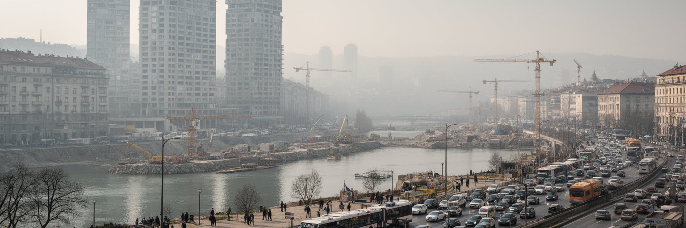
近年のベオグラードでは、河岸再開発、高層建築、商業施設、道路整備が都市の見た目を大きく変えています。サヴァ川沿いの大規模開発は、新しい住宅、ホテル、オフィス、遊歩道を生み、首都の国際的な印象を強めました。一方で、公共空間の扱い、歴史的景観、契約の透明性、立ち退き、交通負荷、地価上昇をめぐる議論も続きます。都市が投資を必要とすることは確かですが、成長の速度が速すぎると、住民が意思決定に参加する時間が失われます。環境面では、冬の大気汚染、石炭火力への依存、古い車、渋滞、暖房、河川の水質、緑地の不足が生活に直結します。川辺を美しく整えるだけでは、空気や交通の問題は解決しません。ベオグラードの再開発を読むには、新しい建物の高さよりも、公共交通、歩行者空間、手頃な住宅、緑地、学校、排水、文化施設がどう配置されるかを見る必要があります。投資が住民の生活を改善するなら都市は強くなりますが、見栄えだけを更新して日常の負担を増やすなら、首都の信頼は弱まります。環境政策も同じで、国際的な目標ではなく、冬に子どもが吸う空気、通勤で失う時間、川辺を誰が使えるかとして評価されるべきです。古い産業用地をどう再利用し、低所得の住民をどこへ住まわせ、公共交通をどこまで強くするかは、景観以上に重要です。成長と公共性の釣り合いが、次のベオグラードの質を決めます。
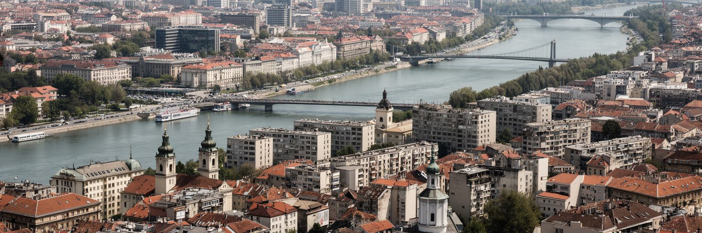
ベオグラードを読むことは、川の合流点に置かれた首都が、いくつもの時代をどう抱えているかを見ることです。要塞と旧市街は帝国の境界を語り、ニュー・ベオグラードは社会主義の計画都市を語り、官庁街は現在の国家運営を語り、河岸の再開発は市場経済と国際資本の速度を見せます。セルビア正教会、旧ユーゴスラビアの記憶、難民と移住、若者の国外志向、IT産業、カフェ文化、夜の音楽は、別々の要素ではなく同じ都市の日常に混ざっています。ベオグラードの魅力は、傷を抱えながらも社交的で、重い政治を持ちながらも会話と音楽を失わない点にあります。しかし、その明るさの背後には、賃金、住宅、大気汚染、政治的不信、地方との格差、周辺国との未解決の記憶があります。世界都市としての価値は、経済規模だけでは測れません。ベオグラードは、ヨーロッパの周縁と中心、東西の外交、旧社会主義と市場経済、観光と生活が交差する都市です。訪れる人は、安い食事や夜遊びだけでなく、川が作った境界、広場が記憶する抗議、団地が支える家族、教会が担う帰属、再開発が問う公共性を同時に見る必要があります。そうして初めて、この都市は単なるバルカンの活気ある首都ではなく、現代ヨーロッパの未解決の課題を映す重要な場所として立ち上がります。ベオグラードの読み方は、対立を急いで整理しないことから始まります。